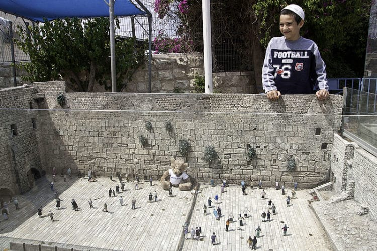

Какие интересные и незабываемые места есть в Тель-Авиве?
1. Старый город Яффо
Старый город Тель-Авива является воистину уникальным местом, т.к. население проживает здесь с
древних времён. На данный момент старый город объединён с современным Тель-Авивом.
Более того, уникальным и
привлекательным для иностранных туристов считается старый порт, который в древности принимал множество паломнических
кораблей. Старый город является тем самым местом, когда не знаешь, что посетить в Тель-Авиве.
2. Старый порт Тель-Авива
Согласно статистическим данным, рейтинг посещение данного места чрезвычайно высок. Бывший порт
сегодня является лишь старой достопримечательностью.
Вдоль берега расположена терраса с множеством заведений
развлекательного типа, а также ресторанов и детских кафе. После окончанию Второй Мировой Войны в порту размещалась
британская армия. Множество ангаров было разрушено. Лишь в начале XXI века удалось отреставрировать исторические
помещения, в которых на сегодня размещены развлекательные зоны.
3. Яффская часовая башня
Удивительное строение, выполненное в стиле османской архитектуры по случаю 25-летия коронации
Абдул-Хамида II. Примечательно, что башня была построена на благотворительные деньги. Жители города сделали пожертвование,
которого хватило на сооружение часовни. Поездка в Израиль будет напрасной, если не посетить площадь часов, на которой и
расположена башня.
4. Большая синагога
Иудейский храм расположен в центральном районе Тель-Авива. Началось строительство в 1924 году, но из-за
нехватки средств процесс остановился. Решающим вкладом стали деньги мецената Ротшильда в 1925 году. Но после десятков лет
запустения, лишь в конце двадцатого века был проведён комплексный ремонт и синагогу отреставрировали. В лучшие для города
времена в синагоге собиралась элитная молодёжь Тель-Авива.
5. Алмазная биржа Израиля
Алмазная биржа является частной компанией, которая специализируется на продаже драгоценных камней – бриллиантов.
Визуально биржа представляет из себя комплекс из 4 зданий разного размера и высоты. Компания включает несколько тысяч сотрудников.
Исторической причиной для создания комплекса стала организация первого Алмазного Клуба Палестины. Кроме того, основание комплекса
открыло начало коммерческой деятельности в Израиле.
6. Музей Диаспоры
Помещение, в котором располагается музей еврейской диаспоры, принадлежит Тель-Авивскому Университету. Создатель
Всемирного Еврейского Конгресса Гольдман стал идейным автором создания музея. Так, в 1978 году музей считался наиболее современным
культурным центром в мире. Благодаря применению инновационных технологий, туристический интерес к месту значительно возрос. Экспозиции,
представленные в музее, описывают национальные особенности евреев.
7. Парк миниатюр «Мини-Израиль»

Гиды в Тель-Авиве советуют непременно посетить Мини-парк – очень впечатляющее произведение искусства. В специальном продолговатом
углублении представлена выставка из более чем 400 миниатюрных скульптур и фигурок. В экспозиции совмещено множество археологических, исторических
достопримечательностей Израиля.
8. Блошиный рынок в Яффо
Рынок, расположенный недалеко от вышеупомянутой Площади часов, может предложить приезжим гостям огромное количество редких старинных
изделий. Товары, которые продаются на рынке, характеризуются несравненной уникальностью и разнообразием. Так, покупатель может найти все, начиная от
старинной еврейской мебели и заканчивая удивительными сервизами ручной работы.
9. Парк «Кейсария»
Национальный парк «Кейсария» – всемирно известное место, которое ежегодно привлекает миллионы туристов. Древний город Кейсария, который
много веков назад ушёл под воду и оставил после себя архитектурные сооружения удивительной красоты.
10. Пляжи Тель-Авива

Современный Тель-Авив, а особенно его западная часть, представляет собой длинный массив раскинувшихся современных пляжей. На них
расположено множество развлекательных заведений и бутиков. Поэтому, в случае дилеммы: «куда сходить в Тель-Авиве», посетите морской берег. При этом отель для отдыха не помешает. Незабываемое и впечатляющее – так, можно охарактеризовать время, проведённое в потрясающем Тель-Авиве. Побывав здесь, обязательно посетите Иерусалим! Мы подготовили для вас обзор про лучшие достопримечательности Иерусалима, чтобы вы вдохновились на дальнейшее путешествие по Израилю.